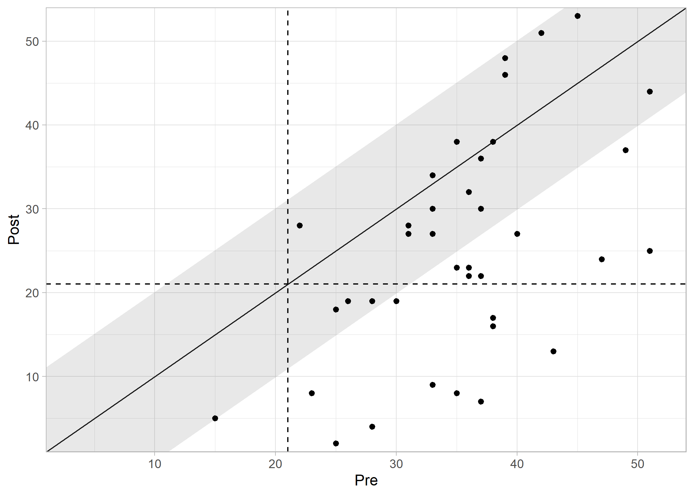

The clinicalsignificance R package provides a comprehensive and consistent framework for analyzing clinical significance in intervention studies. While statistical significance only indicates whether an effect is unlikely due to chance, clinical significance addresses the crucial question: Does an intervention lead to a practically relevant or meaningful change for the individual patient?
This package is designed to help researchers and healthcare professionals assess the practical relevance of their findings and make more informed decisions.
Core Functions
The package implements the most common methods for clinical significance analysis, each accessible through its own main function:
-
cs_anchor(): Evaluates change based on a predefined minimal important difference (MID). -
cs_percentage(): Assesses the percentage change relative to the baseline score. -
cs_distribution(): Determines if a change is statistically reliable and exceeds measurement error (e.g., using the Reliable Change Index, RCI). -
cs_statistical(): Determines if a patient has moved from a clinical to a functional population. -
cs_combined(): Combines multiple approaches (e.g., distribution-based and statistical) for a more rigorous and nuanced assessment.
Installation
You can install the stable version of clinicalsignificance from CRAN:
install.packages("clinicalsignificance")Or, install the development version from GitHub:
# install.packages("pak")
pak::pak("benediktclaus/clinicalsignificance")Example: A Combined Approach
Let’s demonstrate its use with the Claus et al. (2020) study included in the package. We will use the combined approach by Jacobson & Truax (1991), which assesses if a change is both reliable and crosses the cutoff into a functional population.
For this, we need descriptive data from a functional (non-clinical) population for the instrument used (BDI-II) and a reliability estimate.
library(clinicalsignificance)
library(ggplot2)
# Perform the analysis using the combined approach
results_combined <- claus_2020 |>
cs_combined(
id = id,
time = time,
outcome = bdi,
pre = 1,
post = 4,
reliability = 0.801,
m_functional = 7.69,
sd_functional = 7.52,
cutoff_type = "c"
)
# Display a summary of the results
summary(results_combined)
#>
#> ---- Clinical Significance Results ----
#>
#> Approach: Distribution-based
#> RCI Method: JT
#> N (original): 43
#> N (used): 40
#> Percent used: 93.02%
#> Outcome: bdi
#> Cutoff Type: c
#> Cutoff: 21.02
#> Outcome: bdi
#> Reliability: 0.801
#>
#> -- Cutoff Descriptives
#>
#> M Clinical | SD Clinical | M Functional | SD Functional
#> -------------------------------------------------------
#> 35.48 | 8.16 | 7.69 | 7.52
#>
#>
#> -- Results
#>
#> Category | N | Percent
#> ---------------------------
#> Recovered | 10 | 25.00%
#> Improved | 8 | 20.00%
#> Unchanged | 22 | 55.00%
#> Deteriorated | 0 | 0.00%
#> Harmed | 0 | 0.00%
# Visualize the results
plot(results_combined, show_group = "category")
The plot shows each patient as a point. The categories are clearly visible: - Recovered: Patients whose change was reliable AND who moved into the functional population range post-treatment. - Improved: Patients whose change was reliable but who remained within the clinical range. - Unchanged: Patients with no reliable change. - Deteriorated: Patients with a reliable worsening of symptoms.
Learn More
- Vignettes: For a detailed introduction to the different methods and their application, please see the package vignettes on the package website.
- Publication: The package and its underlying methods are described in detail in the Journal of Statistical Software.
Citation
If you use this package in your research, please cite both the package and the accompanying JSS paper.
# You can get the citations directly in R
citation("clinicalsignificance")For the JSS paper:
Claus, B. B., Wager, J., & Bonnet, U. (2024). clinicalsignificance: Clinical Significance Analyses of Intervention Studies in R. Journal of Statistical Software, 111(1), 1–39. https://doi.org/10.18637/jss.v111.i01
BibTeX entries:
@article{JSS:v111:i01,
author = {Benedikt B. Claus and Julia Wager and Udo Bonnet},
title = {{clinicalsignificance}: Clinical Significance Analyses of Intervention Studies in {R}},
journal = {Journal of Statistical Software},
year = {2024},
volume = {111},
number = {1},
pages = {1--39},
doi = {10.18637/jss.v111.i01},
}
@manual{R-clinicalsignificance,
title = {clinicalsignificance: A Toolbox for Clinical Significance Analyses in Intervention Studies},
author = {Benedikt B. Claus},
year = {2024},
note = {R package version 2.1.0},
doi = {10.32614/CRAN.package.clinicalsignificance},
url = {[https://github.com/pedscience/clinicalsignificance/](https://github.com/pedscience/clinicalsignificance/)},
}Contributing
We welcome contributions from the community! If you find any bugs, have feature requests, or would like to contribute code, please open an Issue or submit a Pull Request on GitHub.
License
This package is released under the GNU General Public License v3.0. You are free to use and distribute it according to the terms of the license.
Thank you for using the clinicalsignificance R package! We hope it proves to be a valuable tool for your research. If you find it helpful, please consider giving us a star on GitHub.